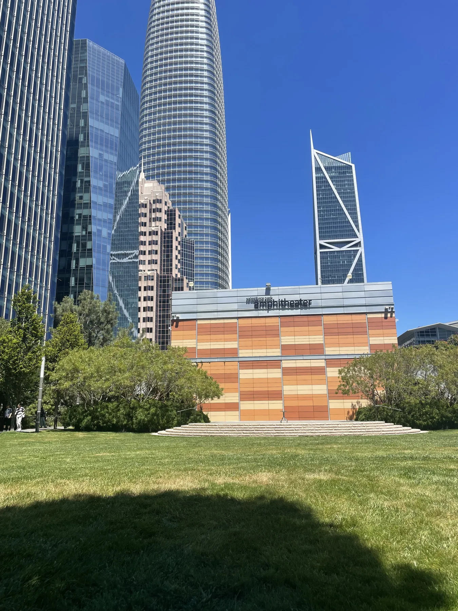
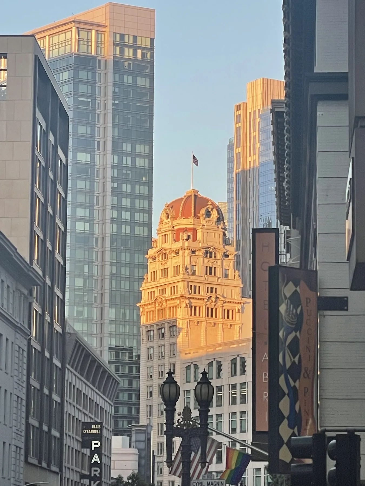
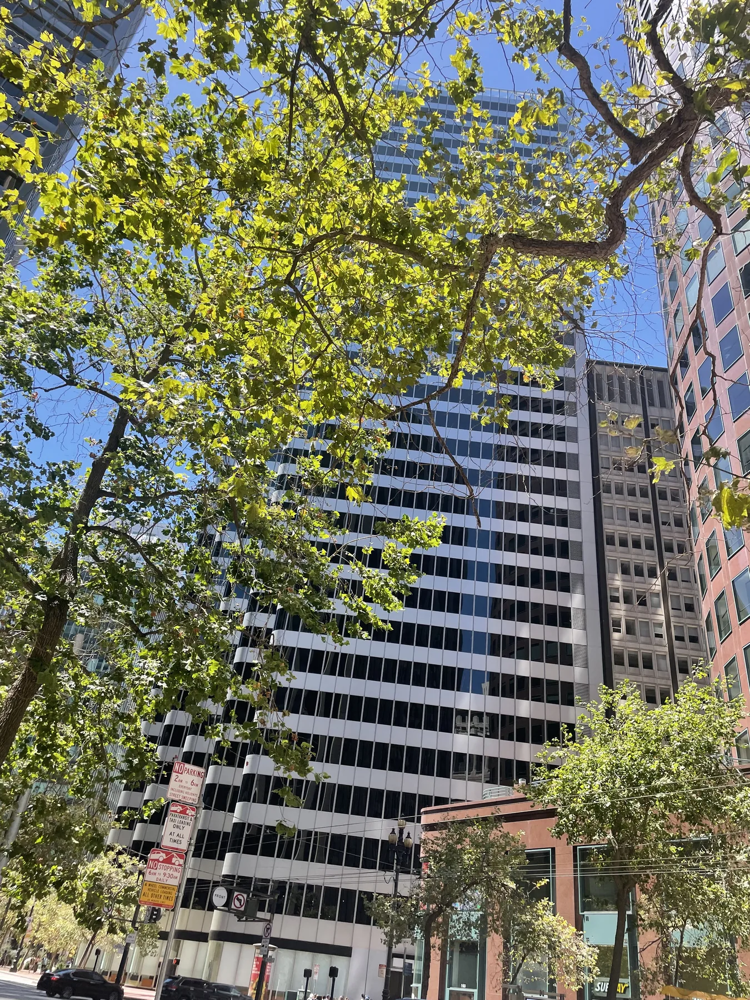
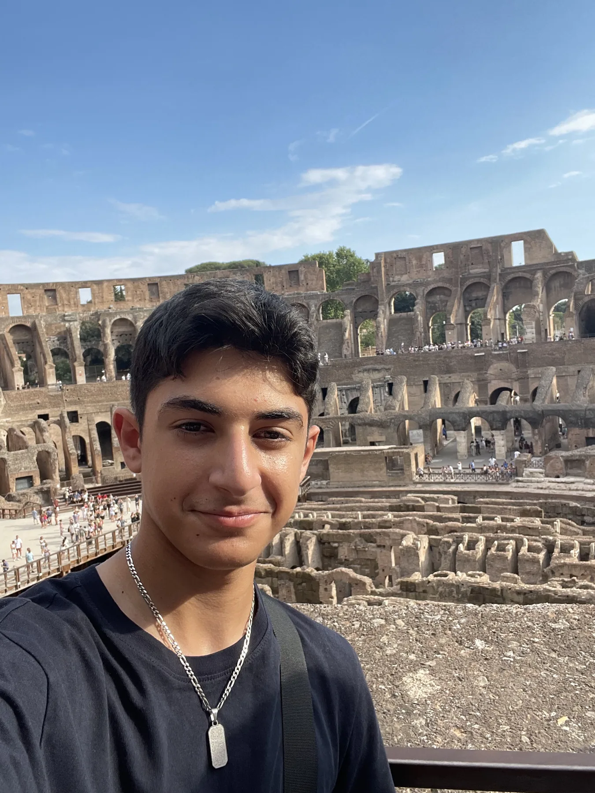
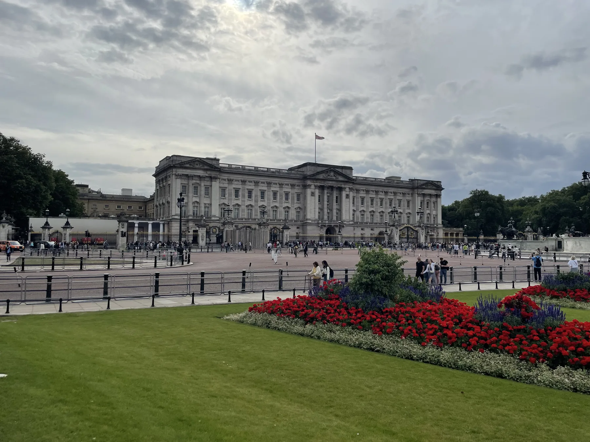
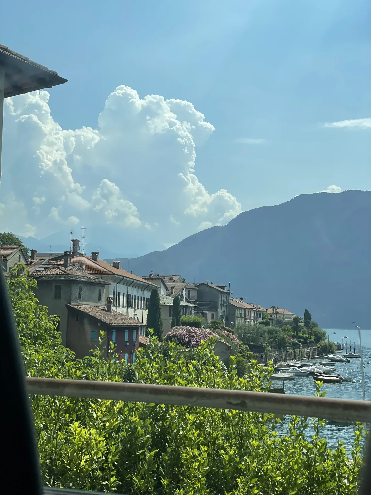

01 · The goal
$1,000 in one week
That was the profit target we set for the trip. We reached it.
Choice page 02 · travel and work
My most recent trip was a week with my cousin, who lives in Dublin, California. I went to help take his car-detailing business up a level. We set a goal of $1,000 in profit for that week—and reached it.

The work behind the trip
Most of my cousin’s car-detailing business is in San Francisco, so we went into the city during my visit.
We aimed for $1,000 in profit over the week, and we reached it. That gave the trip a practical purpose: I wasn’t only visiting family, I was there to help move a real business forward.
What stayed with me
The trip connected work with something else I’m curious about: the technology shaping the Bay Area.
01 · The goal
That was the profit target we set for the trip. We reached it.
02 · The route
My cousin lives in Dublin, and much of the detailing business is in San Francisco.
03 · The city
I saw the city’s large tech presence, including Salesforce and Salesforce Park, and got a closer look at the AI world I’m interested in.
Other places I’ve seen
I’ve traveled to London, Rome, and Lake Como too. They’re part of my story, but the San Francisco trip is the one I want to focus on here.
It brought together family, a one-week business goal we reached, and the chance to see the tech scene around San Francisco up close. That mix made this trip feel different from simply checking another place off a map.
A few frames from the road
Personal photographs from places that have stayed with me.




